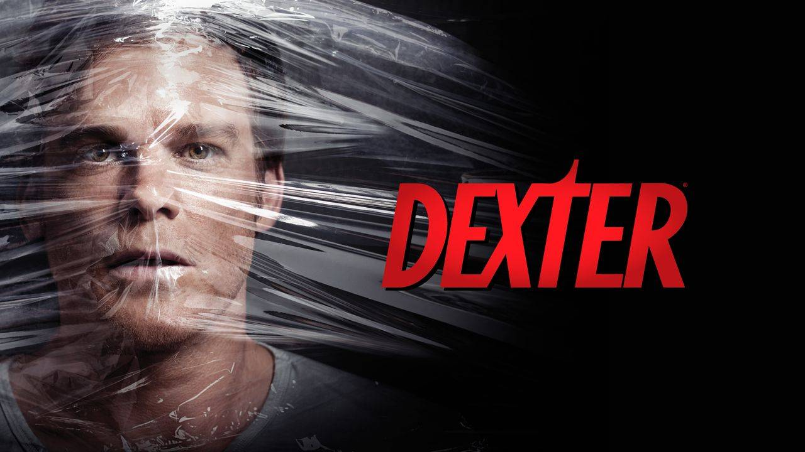

Controvérsia em Torno do personagem "Dexter" Gera Debates Sobre Representação e Ética
São Paulo, 21 de Agosto de 2023 — O personagem "Dexter", que inspirou a popular série de televisão sobre um serial killer que só assassina outros assassinos, está enfrentando um período tumultuado, uma vez que discussões sobre a representação da violência e a ética de glorificar um protagonista homicida emergem, gerando debates e desconforto entre os leitores.Embora os livros e a série tenham conquistado seguidores devotados ao longo dos anos, muitos críticos questionam a romantização da violência e a normalização de um personagem principal que comete assassinatos em série. A obra literária tem sido acusada de tornar a violência extrema um elemento de entretenimento e de potencialmente influenciar a percepção do público sobre temas delicados.
Além disso, a série enfrenta críticas em relação à representação de certos grupos sociais e a forma como o protagonista lida com suas vítimas. Questões de ética e moralidade estão no centro dos debates, enquanto muitos questionam se é apropriado consumir conteúdo que coloca um anti-herói assassino no papel principal e retrata suas ações de maneira quase justificada.
Enquanto algumas vozes defendem a série e os livros como formas de exploração criativa e literária que desafiam as normas, outras alertam para os riscos de romantizar a violência e glorificar personagens moralmente ambíguos. Os defensores argumentam que a série oferece um olhar perspicaz sobre a mente de um criminoso e questiona os limites entre justiça e vingança.
Apesar das controvérsias, há uma notícia positiva para os fãs. Os debates em torno da série e dos livros estão gerando discussões importantes sobre ética na literatura e na mídia de entretenimento. O confronto de opiniões sobre "Dexter" é uma ilustração do poder da literatura em provocar reflexões profundas sobre questões sociais e morais, destacando como as histórias podem ser catalisadoras de diálogo e análise crítica.
Enquanto o legado de "Dexter" permanece dividido, é indiscutível que a série de livros e a subsequente série televisiva têm tido um impacto duradouro na cultura popular e continuam a inspirar debates sobre a representação da violência, a ética narrativa e o papel da ficção na exploração de temas complexos.